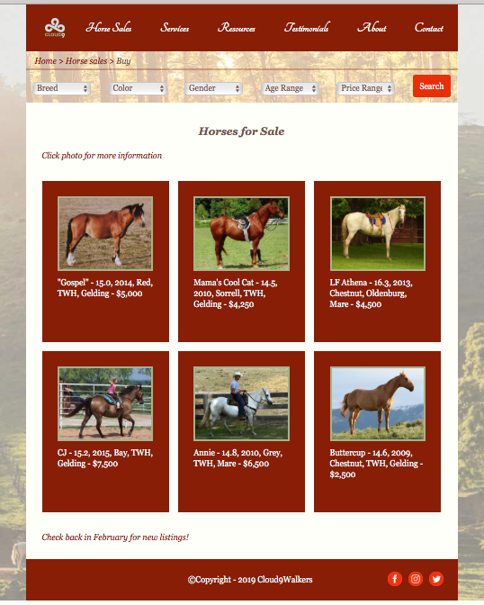

Wecome to J's Portfolio!
Your choice to create the website you want.
We'll do it for you!


Wecome to J's Portfolio!
For nine years, I worked as a dietitian, but am now a web-developer. Currently, I develop front end web. My team and I are very interested in food and health, so we are working with people who want a website displaying their culinary abilities and plan to incorperate food delivery as a feature on their site. At the moment, we are developing two websites and working to learn more about photoshot and illustration in order to further our capabilities in working with Fewd. I am knowledgeable in JavaScript and Jquery, Html, and have a firm grasp of color theory, which greatly aids the development of the design-aspect of websites. If you want to use the app and web to promote your business, we offer free consulting. The key to growing your business into a big business with a small investment is advertising via the web and apps. Have your own website... A new world opens.
About our company J Studio!!
For nine years, I worked as a dietitian, but am now a web-developer. Currently, I develop front end web. My team and I are very interested in food and health, so we are working with people who want a website displaying their culinary abilities and plan to incorperate food delivery as a feature on their site. At the moment, we are developing two websites and working to learn more about photoshot and illustration in order to further our capabilities in working with Fewd. I am knowledgeable in JavaScript and Jquery, Html, and have a firm grasp of color theory, which greatly aids the development of the design-aspect of websites.
Front End Web Design
Front-end web development is the practice of converting data to a graphical interface, through the use of HTML, CSS, and JavaScript, so that users can view and interact with that data.Tools used for front-end development There are several tools and platforms (wordpress, magento etc..) available that can be used to develop the front end of a website, and understanding which tools are best fit for specific tasks marks the difference between developing a hacked site and a well designed, scalable site

Photoshop
Potoshop is a program announced by Adobe in 1990. You can make all visible images as you want and edit them freely. It is a necessity used by many experts in the field of design. Hobby users often use social media, but now it is a useful program that is difficult to use. Modification and synthesis of photographs, and graphic work or typography calligraphy are representative functions of Photoshop. When you want to convey the feeling and mind of handwritten writing to many people who want handwriting using phhotoshop... We can help you.
Illustration
An illustration is a decoration, interpretation or visual explanation of a text, concept or process, designed for integration in published media, such as posters, flyers, magazines, books, teaching materials, animations, video games and films